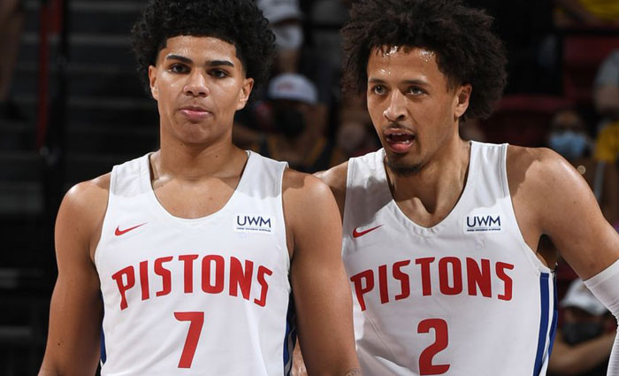
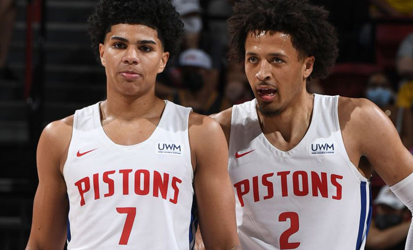

Detroit Pistons
The Detroit Pistons are one of the most storied franchises in the National Basketball Association's illustrious history. The team was originally founded in Fort Wayne, Indiana in 1937 and moved to Detroit 20 years later in 1957. Since then, they have played in 5 different arenas, made 7 NBA finals appearances, won 3 NBA championships and have had numerous hall of fame players wear the Detroit red, white, and blue. (Sources: Detroit Historical Society, The Sporting News)
Today, the Pistons are in the process of a rebuild to bring the team back to its glory days in the late 1980s and early '90s as the Bad Boys of the NBA, and as the "Going to Work" team of 2004. Under new General Manager Troy Weaver and coach Dwane Casey they hope to build a roster of talented individuals that are dedicated to the team and the city of Detroit. This website is a look at past and present Pistons teams and players and their best moments throughout the years.

 
